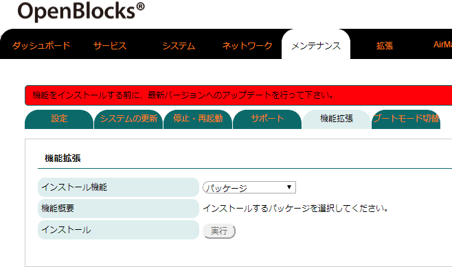
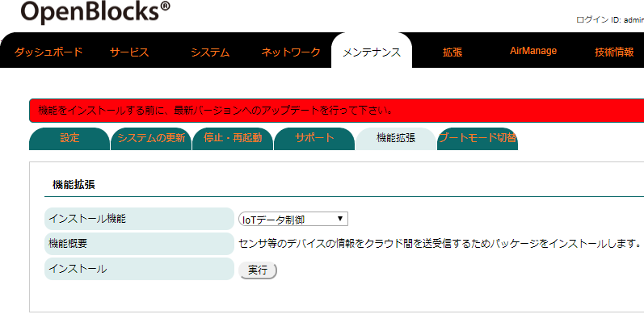
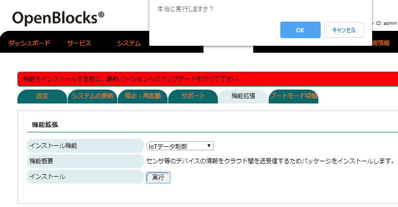
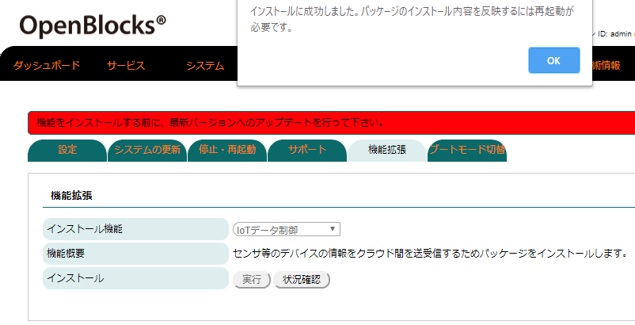

拡張機能¶
出荷直後状態の本筐体では、ネットワーク設定等を設定するソフトウェアのみ組み込まれています。IoT Gatewayとして使いたい場合等の機能拡張を行いたい場合には、『メンテナンス』→『機能拡張』から対応パッケージを追加することが行えます。
尚、WEB UI本体のバージョンが古い場合には、機能拡張でインストールされるパッケージのバージョンの方が新しい可能性が発生することがあります。このような場合、正常に動作しない恐れがある為、機能拡張のパッケージインストール前に自動でアップデート後にインストール処理が行われます。
機能拡張用パッケージのインストール¶

WEB UIの「メンテナンス」タブを選び、さらに「機能拡張」タブをクリックすると機能拡張用のパッケージを選択することができます。

インストールしたいパッケージを選択し、インストールの「実行」ボタンを押すことでインストールされます。
※本機能にてインストールする場合、筐体がインターネット環境下である必要があります。
※インターネットに接続している回線が遅い場合には、パッケージのインストールに長時間かかることがあります。

実行ボタンを押した場合、確認ウインドウが表示されます。インストールするパッケージがあっている場合には、”OK”等の確認を了承するボタンを押してください。
また、インストール中はボタン等が選択できなくなります。
※実行ボタンを押した後、状況確認ボタンが表示されます。このボタンを押すとインストール状況を確認できます。

インストール作業の成否問わず完了するとウィンドウが表示されます。
インストールに成功した場合には、ウィンドウメッセージを了承する旨のボタンを押してください。また、本機能にてインストール完了後、再起動が必要となりますので、本体再起動を行ってください。
※インストールに失敗した場合にはインターネット環境等を再確認し、再度インストールを実行してください。
※一部のパッケージのインストールにはsources.list及びPubキーの追加が必用となる場合があります。
本機能からインストール可能なパッケージは、ドキュメント作成時現在以下となっています。
パッケージ |
内容 |
|---|---|
Samba |
Samba用WEB UI及びファイル共有用ソフト一式となっています。 本機能については「Samba設定ガイド」を参照して下さい。 |
IoTデータ制御 |
IoTデータ制御用WEB UI及び各種アプリケーション一式となっています。 本機能については「データハンドリングガイド」を参照して下さい。 |
Node-RED |
Node-RED用WEB UI及びNode-RED一式となっています。 本機能については「Node-REDスターターガイド」を参照して下さい。 |
セキュリティ |
WEB UIやSSHへの不正ログインに対してアクセス拒否塔を実施する機能一式となっています。 本機能については「セキュリティガイド」を参照して下さい。 |
カメラ |
カメラによる画像取込設定用WEB UI及び画像表示・動体検知ソフト一式となっています。 本機能については「カメラ設定ガイド」を参照して下さい。 |
Docker |
Docker DAEMONをインストールします。 |
Moby |
Microsoft社が構成したDocker DAEMON一式をインストールします。 |
Docker(WEB UI込み) |
Dockerコンテナ等をWEB UIから制御できる機能一式をインストールします。 尚、Docker DAEMONについてもインストールします。 本機能については「Docker設定ガイド」を参照して下さい。 |
Azure IoT Edge |
Azure IoT Edge本体及び設定を行うWEB UI一式をインストールします。 Docker DAEMONが存在しない場合、Docker DAEMONについてもインストールします。 本機能については「Azure IoT Edge設定ガイド」を参照して下さい。 |
FTP |
FTPサーバDAEMON及び設定用WEB UI一式をインストールします。 本機能については「FTP設定ガイド」を参照して下さい。 |
注釈
本ドキュメント作成時点において、Moby及びDockerパッケージの切り替えは自動では行えなません。そのため、ご使用したいパッケージに関してはWEB UI込みでのインストール前に使用したいDockerのパッケージを意図的にインストールしてください。